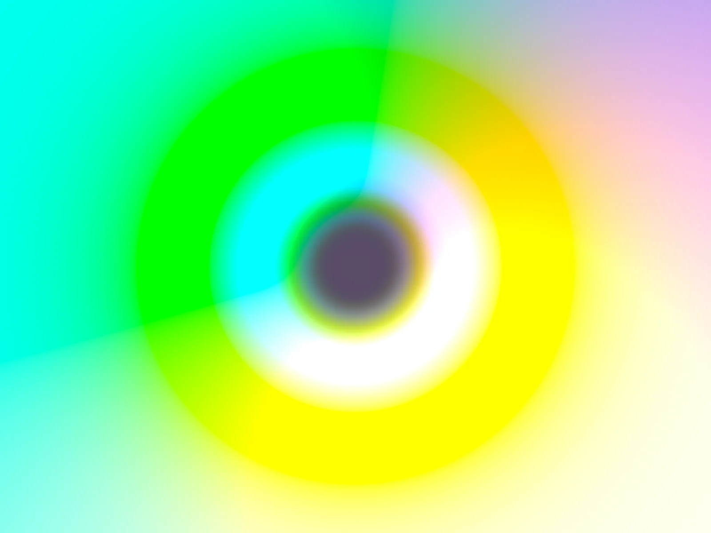

Gradient Shaders
Animated WebGL gradient studies exploring color, flow, and transition. Each shader is a single self-contained HTML file.

Prism Helix
A full-frame chromatic tunnel using 120-degree RGB phase offsets on a twisting cylindrical SDF, with no sphere occlusion.
Oklab Flow
A soft multicolor gradient flowing through perceptually uniform Oklab color space, with fluid domain-warped motion.